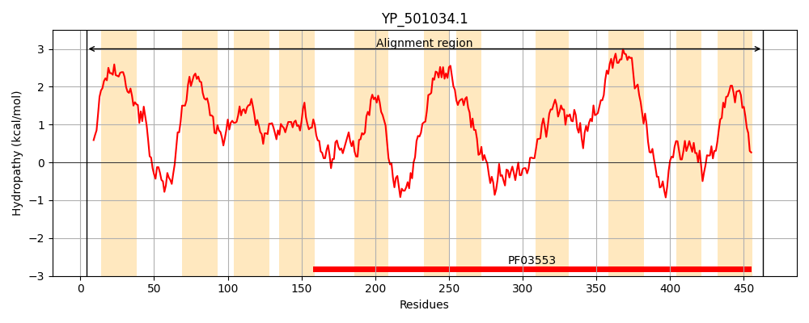
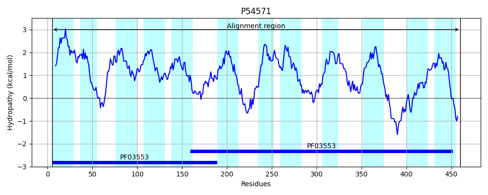
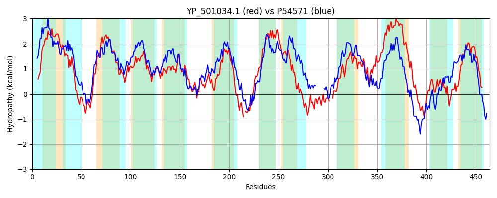

Hit Accession: P54571
Hit TCID: 2.A.35.1.2
Hit Description: gnl|BL_ORD_ID|10947 gnl|TC-DB|P54571|2.A.35.1.2 HYPOTHETICAL NA+/H+ ANTIPORTER IN ANSB-SPOIIM INTERGENIC REGION - Bacillus subtilis.
Mach Len: 464
e:0.000000
Query TMS Count : 11
Hit TMS Count: 12
TMS-Overlap Score: 10.550000
Predicted Substrates:CHEBI:9175;sodium(1+), CHEBI:5584;hydron, CHEBI:15595;malate(2-), CHEBI:24996;lactate
BLAST Alignment:
Score: 767 , Bit scores: 300 bits, E-value: 3.5e-97, Alignment length: 464, Percentage identity: 34
Query: 4 RKPTFLESISTMIVMVIVVVTGFVFFDIPIQVLLIIASAYATWIAKRVGLTWQDLEKGIAERLNTAMPAILIILAVGIIVGSWMFSGTVPALIYYGLDLLNPSYFLISAFFISAVTSVATGTAWGSASTAGIALISIGNQLGIPPGMAAGAIIAGAVFGDKMSPLSDTTNLAALVTKVNIFKHIHSMMWTTIPASIIGLLVWFIAGFQFKGHSND-KQIQTLLSELAQIYQINIWVWVPLIVIIVCLLFKMATVPAMLISSFSAIIVGTFNHHFKMTDGFKATFSGFNESMIHQSHISSSVK---SLLEQGGMMSMTQILVTIFCGYAFAGIVEKAGCLEVLLTTISKGIHSVGSLICITVICCIALVFAAGVASIVIIMVGVLMKDLFEKYQVSRSVLSRTLEDSSTMVLPLIPWGTSGIYYTNQLHVSVEEFFIWTVPCYLCAIIAIIYGFTGIGIKKSSNS 463
R PT E I + V + +V++ VF D+PIQ+ L ++ A + R+G +++DL+ I ++ + A+LI+++VG ++G+W+ G VP LIYYGL+ ++PS FL++ I ++ SVATGT+WG+ TAGIA+I+IG LGIP + AGAI++GA FGDK+SPLSD+T LA+ ++KV++ H+ +M++ +IPA +I +++ + GF + G + D +++ L S L + I+IW+ +P +++IV L K ++P ++I + I + ++GF+ I + V+ LL +GG++ M LV I G F G++EK G L+V+++T K + S G++ T+I + +I+ +M+D +++ + R VLSR E T+ ++PW +GIY L VS + + ++ +AIIYG+TG I + N+
Sbjct: 5 RLPTLFEIIIVLGVFLALVLSFTVFLDLPIQLALFVSWFIAMLLGIRLGYSYKDLQNAIVHGISNGLEAVLILVSVGALIGTWIAGGVVPTLIYYGLEFIHPSIFLLATLIICSIMSVATGTSWGTVGTAGIAMIAIGEGLGIPLPLVAGAILSGAYFGDKLSPLSDSTVLASSLSKVDVLAHVRAMLYLSIPAYVITAILFTVVGFMYGGKNIDLDKVEFLKSSLQNTFDIHIWMLIPAVLVIVLLAMKKPSMPVIVIGALLGAIWAVVFQGMDIAHAIATAYNGFS--------IKTDVEFLNGLLNRGGIVGMLDSLVVIIFGLGFGGLLEKLGVLKVIVSTFEKKLTSAGNVTLSTLIVAFLANIFGCAMYVSLILTPKIMEDSYDRLHLDRRVLSRNSEVGGTLTSGMVPWSDNGIYMAGILGVSTFSYLPFMWLSFVAIGLAIIYGYTGKFIWYTKNN 460 | Protein Hydropathy Plots: |
|---|
|  |  |
Pairwise Alignment-Hydropathy Plot:
|
|---|
|  |